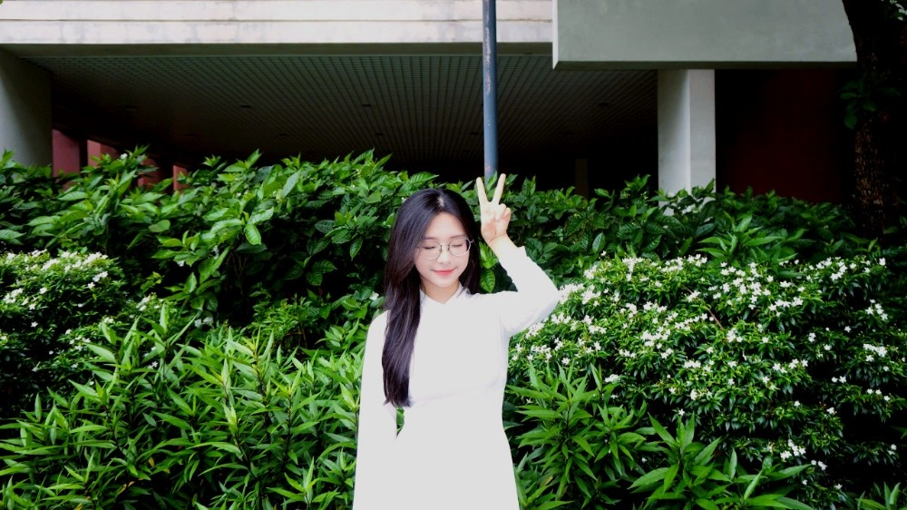

Công nghệ & Lập trình
Tối ưu thuật toán Python (như Euclidean) và chế tạo các công cụ tự động hóa thông minh.
Sinh viên ngành Điện tử Viễn thông — đam mê lập trình, AI và xây dựng sản phẩm số. Đang hướng tới mục tiêu du học quốc tế.
Giới thiệu

Tôi là sinh viên ngành điện tử viễn thông tại Trường Đại học Công nghệ (UET), theo đuổi ước mơ được đi học hỏi, khám phá thế giới. Tôi thích biến ý tưởng thành sản phẩm thực tế — từ quản lý tệp tin, khai thác dữ liệu đến xây dựng ứng dụng hỗ trợ luyện IELTS.
Ngoài giờ học, tôi chơi cầu lông, tự nấu ăn và dành thời gian mỗi ngày để củng cố tiếng Anh học thuật. Website này tổng hợp hành trình và các sản phẩm cá nhân trong môn học Nhập môn Công nghệ số và Ứng dụng Trí tuệ nhân tạo của tôi.
Tối ưu thuật toán Python (như Euclidean) và chế tạo các công cụ tự động hóa thông minh.
Đam mê cầu lông — rèn luyện phản xạ sắc bén và duy trì năng lượng bền bỉ.
Cân bằng nhịp sống với những bữa trưa và tối tự tay vào bếp. Đam mê bất diệt: Gà và thịt rán!
Kết hợp nền tảng Điện tử Viễn thông vững chắc cùng khả năng ngoại ngữ nhạy bén để tự tin chinh phục các môi trường giáo dục quốc tế.
Portfolio
Sáu bài tập dưới đây thể hiện việc áp dụng lý thuyết vào thực hành, làm nổi bật sản phẩm cuối cùng và quy trình thực hiện các kỹ năng số.
Thực hành quản lý không gian lưu trữ: tạo thư mục định danh cá nhân, đổi tên tệp, khôi phục dữ liệu.
Đánh giá tổng hợp 10 nguồn thông tin (IEEE, Google Scholar) về Transistor BJT.
Thử nghiệm kỹ thuật Prompt Engineering qua 3 tác vụ: Giải thuật Euclidean, nguyên lý PNP và ôn tập Giải tích. Ứng dụng Role-playing để tối ưu.
Tổ chức dự án thiện nguyện ngày Tết bằng Google Workspace (Docs, Sheets, Drive).
Sản xuất Infographic luyện IELTS bằng Dictation phối hợp pipeline 4 công cụ AI.
Phân tích "ảo giác hiểu biết" và thiết lập 6 nguyên tắc cá nhân khi dùng AI: Tác giả chịu trách nhiệm, AI-free zone, Fact-check...
Tổng kết
Hành trình môn học đã định hình lại tư duy của tôi: từ tổ chức dữ liệu khoa học đến làm chủ Generative AI một cách có đạo đức và hiệu quả.
Hướng tới tương lai: Biến AI thành "trợ lý" đắc lực cho các đồ án Điện tử Viễn thông chuyên sâu, tuân thủ 6 nguyên tắc đạo đức và luôn đặt năng lực tư duy cá nhân lên hàng đầu.